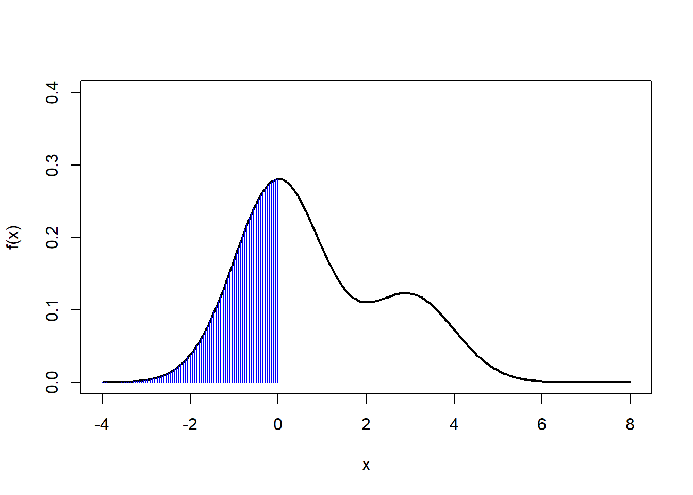
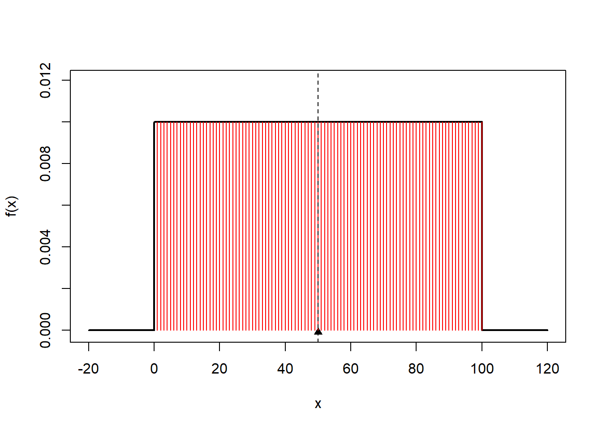
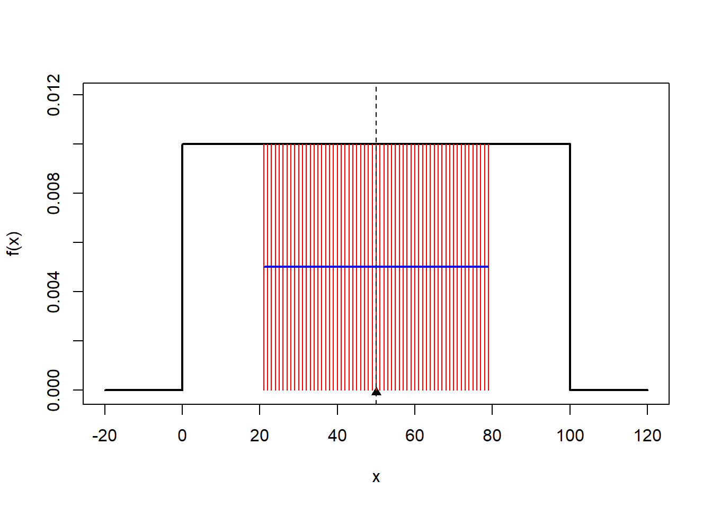
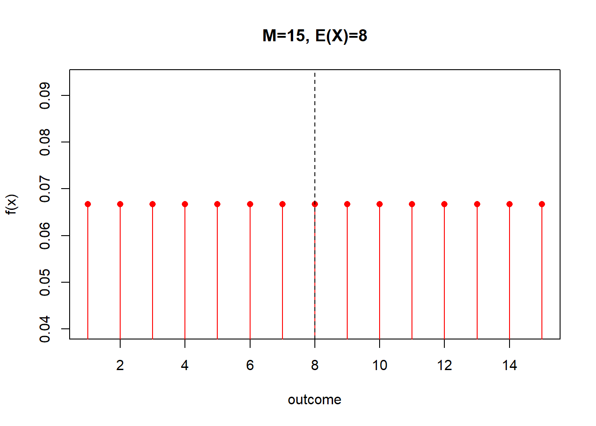
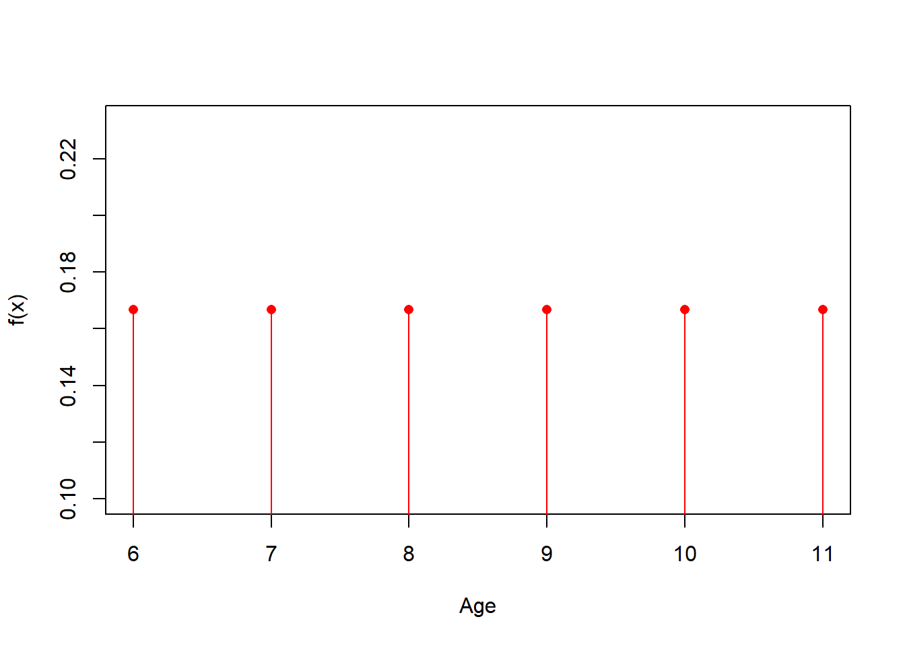

Chapter 6 Continous Random Variables
6.1 Objective
In this chapter we will study continous random variables.
We will define the probability density function, its mean and variance and, similar to discrete random variables, we will define the probability distribution function.
6.2 Continuous random variables
In the last chapter we used the probabilities of discrete random variables to define the probability mass function \[f(x)=P(X= x)\]
Where the probability that the random variable takes the value \(x\) is understood as the value of its relative frequency, when the number of repetitions of the random experiment tends to infinity.
When we talked about continuous data, we saw that we had to transform them into discrete variables (bins) to produce relative frequency tables or histograms. Let’s see how to define the probabilities of continuous variables taking these partitions into account.
Example (misophonia)
Let us reconsider the angle of convexity of patients with misophonia (Section 2.21). The angle of convexity of 123 patients was measured. We understood each measurement as the result of a random experiment that we repeated 123 times and that we could describe in a frequency table or in a histogram.
To do this, we redefine the results as small regular intervals (bins) and calculate the relative frequency of each interval.
## outcome ni fi
## 1 [-1.02,3.46] 8 0.06504065
## 2 (3.46,7.92] 51 0.41463415
## 3 (7.92,12.4] 26 0.21138211
## 4 (12.4,16.8] 20 0.16260163
## 5 (16.8,21.3] 18 0.146341466.3 relative frequencies
Relative frequencies for the intervals are the probabilities when \(N \rightarrow \infty\)
\[f_i=\frac{n_i}{N} \rightarrow P(x_i \leq X \leq x_i + \Delta x)\]
The probability depends now on the length of the bins \(\Delta x\). If we make the bins smaller and smaller then the frequencies get smaller and therefore
\[P(x_i \leq X \leq x_i + \Delta x) \rightarrow 0\] when \(\Delta x \rightarrow 0\), because \(n_i \rightarrow 0\)
Let’s see how the frequencies get smaller when we divide the range of \(X\) into \(20\) bins
## outcome ni fi
## 1 [-1.02,0.115] 2 0.01626016
## 2 (0.115,1.23] 0 0.00000000
## 3 (1.23,2.34] 3 0.02439024
## 4 (2.34,3.46] 3 0.02439024
## 5 (3.46,4.58] 2 0.01626016
## 6 (4.58,5.69] 4 0.03252033
## 7 (5.69,6.8] 11 0.08943089
## 8 (6.8,7.92] 34 0.27642276
## 9 (7.92,9.04] 12 0.09756098
## 10 (9.04,10.2] 4 0.03252033
## 11 (10.2,11.3] 3 0.02439024
## 12 (11.3,12.4] 7 0.05691057
## 13 (12.4,13.5] 2 0.01626016
## 14 (13.5,14.6] 6 0.04878049
## 15 (14.6,15.7] 4 0.03252033
## 16 (15.7,16.8] 8 0.06504065
## 17 (16.8,18] 4 0.03252033
## 18 (18,19.1] 9 0.07317073
## 19 (19.1,20.2] 3 0.02439024
## 20 (20.2,21.3] 2 0.016260166.4 probability density function
We define a quantity at a point \(x\) that is the amount of probability per unit distance that we would find in an infinitesimal bin \(dx\) at \(x\)
\[f(x)= \frac{P(x\leq X \leq x+dx)}{dx}\]
\(f(x)\) is called the probability density function.
Therefore, the probability of observing \(x\) between \(x\) and \(x+dx\) is given by
\[P(x\leq X \leq x+dx)= f(x) dx\]
Definition
For a continuous random variable \(X\), a probability density function is such that
- The function is positive:
\[f(x) \geq 0\]
- The probability of observing any value is 1:
\[\int_{-\infty}^{\infty} f(x) dx = 1\] 3) The probability of observing a value within an interval is the area under the curve:
\[P(a\leq X \leq b)=\int_{a}^{b} f(x) dx\]
The properties make sure that \(f(x)dx\) satisfy Kolmogorov’s properties of a probability measure.
The probability density function is a step forward in the abstraction of probabilities: we add the continuous limit
\[dx \rightarrow 0\]
All the properties of probabilities are translated in terms of densities
\[\sum \rightarrow \int\]
Probability densities are mathematical quantities that do not necessarily represent random experiments.
A fundamental interest in statistics is to describe the densities that describe our particular random experiment.
6.5 Total area under the curve
Example (raindrop fall)
take the probability density that may describe the random variable that measures where a raindrop falls in a rain gutter of length \(100cm\).
\[ f(x)= \begin{cases} \frac{1}{100},& \text{if } x\in (0,100)\\ 0,& otherwise \end{cases} \]
Let us verify that the function satisfies the three properties of a probability density.
it is evident from the definition that \(f(x) \geq 0\)
The probability of observing anything is the total area under the curve
\(P(-\infty\leq X \leq \infty)= \int_{-\infty}^{\infty} f(x) dx = 100*0.01= 1\)

- The probability of observing \(x\) in an interval is the area under the curve within the interval
- \(P(20 \leq X \leq 60) = \int_{20}^{60} f(x) dx = (60-20)*0.01=0.4\)

6.6 Probabilities of continous variables
For continuous variables, we compute the probability that the variable is in a given interval. That is
\[P(a \leq X \leq b)\] We saw that for continuous variables, the probability that the experiment gives us a particular real number is zero: \(P(X=a)=0\)
The \(P(a \leq X \leq b)\) is the area under the curve of \(f(x)\) between \(a\) and \(b\)
- \(P(a \leq X \leq b) = \int_{a}^{b} f(x) dx\)

6.7 Probability distribution
The probability distribution \(F(c)\) defined as the accumulation of probability up to the outcome \(C\)
\(F(c) = P(X \leq c)\)
can be used to compute the probability \(P(a \leq X \leq b)\).
Consider:
- that the probability accumulated up to \(b\) is given by
- \(F(b) = P(X \leq b)=\int_{-\infty}^bf(x)dx\)

- that the probability accumulated up to \(a\) is
- \(F(a) = P(X \leq a)\)

Then the probability between \(a\) and \(b\) is given by the difference in the value of the probability distribution
- \(P(a\leq X \leq b) = \int_a^b f(x)dx=F(b)-F(a)\)

Definition
The probability distribution of a continuous random variable is defined as
\[F(a)=P(X\leq a) =\int_{-\infty} ^a f(x)dx\]
and have the properties:
- It is between \(0\) and \(1\):
\[F(-\infty)= 0 \,\, and \,\,F(\infty)=1\]
- It always increases:
\[F(a)\leq F(b)\]
if \(a\leq b\)
- It can be used to compute probabilities:
\[P(a \leq X \leq b)=F(b)-F(a)\]
- It recovers the probability density:
\[f(x)=\frac{dF(x)}{dx}\]
We use probability distributions to compute probabilities of a random variable within intervals, and its derivative is the probability density function.
Example (raindrop fall)
For the uniform density function:
\[ f(x)= \begin{cases} \frac{1}{100},& \text{if } x\in (0,100)\\ 0,& otherwise \end{cases} \]
We find that the probability distribution is
\[ F(a)= \begin{cases} 0,& a \leq 0 \\ \frac{a}{100},& \text{if } a\in (0,100)\\ 1, & 100 \leq a \\ \\ \end{cases} \]
6.8 Probability plots
- We can plot the the probability of a random variable in an interval as the area under the density curve. For instance
\[P(20<X<60)\]

- Equivalenty, we can plot the probability \(P(20<X<60)\) as the difference in distribution values

6.9 Mean
As in the discrete case, the mean measures the center of mass of probabilities
Definition
Suppose \(X\) is a continuous random variable with probability density function \(f(x)\). The mean or expected value of \(X\), denoted as \(\mu\) or \(E(X)\), is
\[\mu=E(X)=\int_{-\infty}^\infty x f(x) dx\]
It is the continuous version of the center of mass.
Example (raindrop fall)
The random variable with probability density
\[ f(x)= \begin{cases} \frac{1}{100},& \text{if } x\in (0,100)\\ 0,& otherwise \end{cases} \]
Has an expected value at
\[E(X)=50\]

6.10 Variance
As in the discrete case, the variance measures the dispersion of probabilities about the mean
Definition
Suppose \(X\) is a continuous random variable with probability density function \(f(x)\). The variance of \(X\), denoted as \(\sigma^2\) or \(V(X)\), is
\[\sigma^2=V(X)=\int_{-\infty}^\infty (x-\mu)^2 f(x) dx\]
It is the continuous version of the moment of inertia.
6.11 Functions of \(X\)
In many occasions, we will be interested in outcomes that are function of the random variables. Perhaps, we are interested in the square of the elongation of a spring, or on the square root of the temperature of an engine.
Definition
For any function \(h\) of a random variable \(X\), with mass function \(f(x)\), its expected value is given by
\[E[h(X)]= \int_{-\infty}^{\infty} h(x) f(x)dx\]
From this definition we recover the same properties as in the discrete case
The mean of a linear function is the linear function fo the mean: \[E(a\times X +b)= a\times E(X) +b\] for \(a\) and \(b\) scalars.
The variance of a linear function of \(X\) is:\[V(a\times X +b)= a^2\times V(X)\]
The variance about the origin is the variance about the mean plus the mean squared: \[E(X^2)=V(X)+E(X)^2\]
6.12 Exercises
6.12.0.1 Exercise 1
For the probability density
\[ f(x)= \begin{cases} \frac{1}{100},& \text{if } x\in (0,100)\\ 0,& otherwise \end{cases} \]
- compute the mean (R:50)
- compute variance using \(E(X^2)=V(X)+E(X)^2\) (R:100^2/12)
- compute \(P(\mu-\sigma\leq X \leq \mu+\sigma)\) (R: 0.57)
- What are the first and third quartiles? (R: 25; 75)

6.12.0.2 Exercise 2
Given \[ f(x)= \begin{cases} 0, & x < 0 \\ ax, & x \in [0,3] \\ b, & x \in (3,5) \\ \frac{b}{3}(8-x),& x \in [5,8]\\ 0, & x > 8 \\ \end{cases} \]
What are the values of \(a\) and \(b\) such that \(f(x)\) is a continous probability density function? (R: 1/15; 1/5)
what is the mean of \(X\)? (R:4)
6.12.0.3 Exercise 3
For the probability density
\[ f(x)= \begin{cases} \lambda e^{-\lambda x},& \text{if } x \geq 0\\ 0,& otherwise \end{cases} \]
- Confirm that this is a probability density
- Compute the mean (R: 1/\(\lambda\))
- Compute the expected value of \(X^2\) (R: 2/\(\lambda^2\))
- Compute variance (R: 1/\(\lambda^2\))
- Find the probability distribution \(F(a)\) (R: \(1-exp(-\lambda a)\))
- Find the median (R: \(\log{2}\)/\(\lambda\))